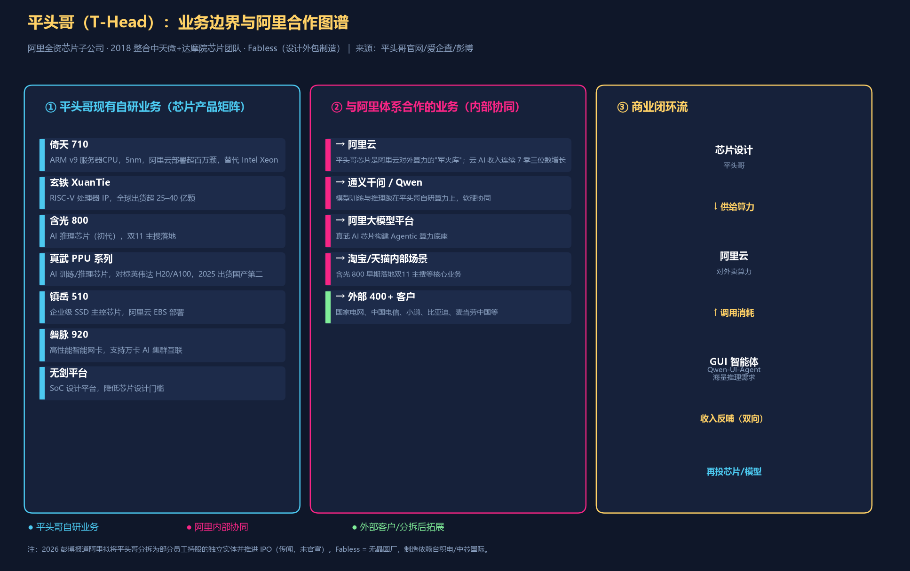

深度拆解
很多人以为，阿里这次组织架构调整，把云智能集团和平头哥做战略协同（市场传闻），是为了“造芯”。但这次调整真正要讲的，是一张“入场券”——GUI 智能体。
先解释一下什么是 GUI 智能体。GUI 是图形用户界面（Graphic User Interface）的缩写，就是你在手机、电脑上看到的那些按钮、图标、窗口。GUI 智能体，简单说就是一个能“看着屏幕自己操作”的 AI：你给它一个任务（比如“帮我在某 App 上订一张周五去上海的高铁票”），它会像人一样看屏幕、点按钮、填表单、翻页面，把一连串原本要你手动点的操作自己跑完。它和普通聊天机器人的区别是——聊天机器人只动嘴（给你文字答案），GUI 智能体动手（直接帮你把事办了）。阿里这次发布的 Qwen-UI-Agent，就是这类能操作手机和电脑的 AI 助手。
为什么阿里要把这事和芯片、云捏到一起？因为 GUI 智能体是真正的算力消耗大户。
Qwen-UI-Agent 的发布，表面上是多了一个能操作手机和电脑的 AI 助手，实质是为阿里云寻找一个持续消耗算力的使用场景——每一次“看屏幕、想下一步、点一下”的背后，都是海量的视觉理解和多轮推理，等于帮用户干一件事要跑几十次模型。
这能不能成立，得看一个硬指标：阿里云 AI 相关收入（含 GUI 智能体带来的增量推理算力消耗）占总营收的比例，能不能真正爬上去。反过来，如果 GUI 智能体只是停留在 Demo 阶段，没法转化成实际的 API 调用量和云资源消耗，那这次组织调整就只是一次“部门重组”的叙事游戏。
这场调整到底在干什么，先得搞清平头哥是谁。平头哥半导体（T-Head）是阿里巴巴全资控股的芯片子公司，2018 年由阿里收购的中天微系统与原达摩院芯片团队整合而成，采用 Fabless 模式（只做设计，制造外包台积电/中芯国际）。它手里的牌不是一块芯片，而是一整条栈：
换句话说，平头哥不是“一个造芯部门”，而是阿里从 CPU、GPU、存储到网络的全栈自研底座。它和阿里云、通义千问的关系，不是“附属”，而是“供给方”——阿里云的算力对外售卖，底层军火来自平头哥；通义千问的训练与推理，跑在平头哥自研芯片上。这张业务与合作图谱（见附图《平头哥业务与阿里合作图谱》）把“自研业务 / 阿里内部协同 / 外部客户”三层关系画清楚了。2026 年彭博社还报道阿里拟将平头哥分拆为部分员工持股的独立实体并推进 IPO（传闻，未官宣）——若落地，平头哥将从“内部军火库”变成“独立算力供应商”。

这场调整的逻辑，拆开看是三件环环相扣的事。
把平头哥（芯片）与云智能集团做战略协同（市场传闻），等于把芯片设计到云计算服务的链条彻底打通。过去，平头哥的芯片更多是“技术储备”，现在它成了阿里云对外提供算力的“军火库”。这就像把发动机厂和整车厂合并，不是为了造一台更好的发动机，而是为了卖更多的车。
Qwen-UI-Agent 则是算力的需求侧引爆器。传统的聊天机器人，调用一次大模型可能只需消耗几万 tokens。但一个 GUI 智能体要操作手机、操作电脑、进行深度搜索，它需要不断“观察”屏幕、“思考”下一步、“执行”点击动作，这背后是海量的视觉理解、规划决策和多轮推理。每一次操作，都是对算力的“烧钱式”消耗。这不再是“问一句答一句”，而是“帮你干一件事，背后跑几十次模型”。
开源生态是算力的流量入口。通义千问的开源策略，让 Qwen 系列模型成为开发者生态的事实标准。当开发者基于 Qwen-UI-Agent 开发各种自动化工具时，他们最便捷的部署地就是阿里云。这形成了一个商业闭环：开源模型吸引开发者 → 开发者调用 API 消耗算力 → 算力消耗为阿里云贡献收入 → 收入反哺芯片和模型研发。
真金白银的账本摆在下面。根据小K超爱研究产业数据库（2026-07 截面），阿里最新财年营收 9963.47 亿人民币，净利润 1294.7 亿人民币。
算现金流：
对比一下：如果阿里只是一家电商公司，市场通常会给 10-15 倍 PE；如果它被认可为“AI 云巨头”，市场愿意给 20-25 倍 PE。当前 18 倍左右的估值，正处于“半信半疑”的状态——市场既没有把它当纯电商，也没完全把它当纯 AI。
再看钱怎么流。Qwen-UI-Agent 发布 + 组织架构调整，影响的是云智能集团的 AI 产品收入（目前约 300 亿/季度，且 AI 产品已连续 7 个季度三位数增长 ），直接拉动“营收”这一格，进而通过规模效应改善净利率。
这个“算力阳谋”叙事，如果错了，会错在哪里？用同一把尺子来量：
如果 GUI 智能体叫好不叫座。 发布后开发者社区的 API 调用量没出现爆发式增长，云智能集团的 AI 收入增速从三位数回落到两位数，那么“算力消耗大户”的假设就不成立。看一个指标：阿里云 AI 产品收入增速是否连续两个季度低于 50%。
如果组织协同产生内耗。 平头哥的芯片团队和云智能的运营团队，文化差异巨大。协同后若芯片流片进度延迟，或者云服务稳定性下降，反而会拖累整体营收。看一个指标：阿里云市场份额是否出现环比下滑。
如果算力成本失控。 GUI 智能体消耗的算力是巨大的，如果阿里云的自研芯片（平头哥）无法有效降低单位算力成本，那么 AI 收入增长越快，毛利反而可能被稀释。看一个指标：云智能集团的毛利率是否出现连续下滑。
对于投资者和产业观察者，理解这件事需要跳出“阿里是不是要造芯片”的思维定势。真正的看点在于：阿里能否把“模型能力”变成“算力生意”。 这就像英伟达卖的不是显卡，而是“加速计算”的入口。阿里现在想做的，是成为国内“AI 时代的算力电网”，而 GUI 智能体，就是那个让家家户户都装上“智能电表”的推手。
理解这件事有三个角度。一是阿里云从“卖水人”到“卖电人”：过去卖的是计算资源（水），现在想卖的是“智能服务”（电），电的附加值更高，但前期投入也更大。二是开源是钩子、算力是鱼竿：通义的开源策略本质是“放长线钓大鱼”，模型免费，但调用模型的算力不免费。三是组织调整是信号不是结果：战略协同只是表明阿里“All in AI 算力”的决心，真正的验证要看未来 2-3 个季度财报里云智能集团的收入结构变化。
这场关于“算力”的阳谋，才刚刚开始。它能不能成，不看发布会多热闹，只看一个数字：阿里云 AI 收入占总营收的比例，何时能突破两位数。
**
本文为产业机制分析，所有数据均来自公开来源或第三方数据库，不构成任何投资建议。文中涉及的估值测算基于特定假设，可能存在偏差。请读者独立判断，投资需谨慎。
*选题来源：事件库（WorkBuddy回填 + score_events 打分） ｜ 合规闸门：通过 ｜ 警告数：1 ｜ 未接地数值（请核实来源）：50%